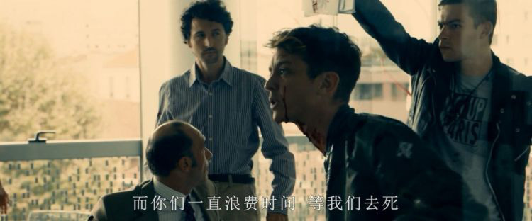
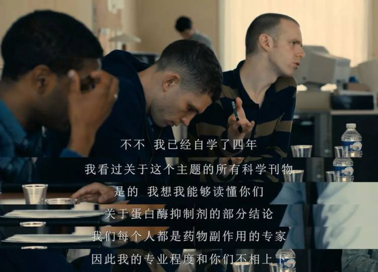
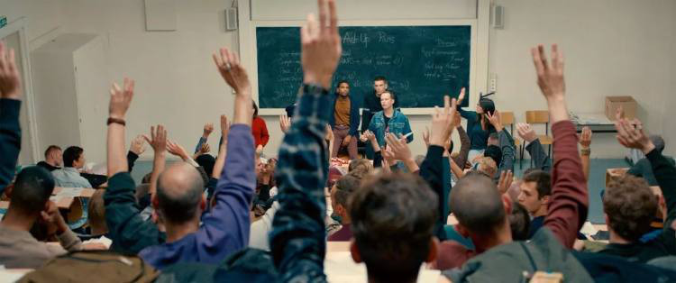
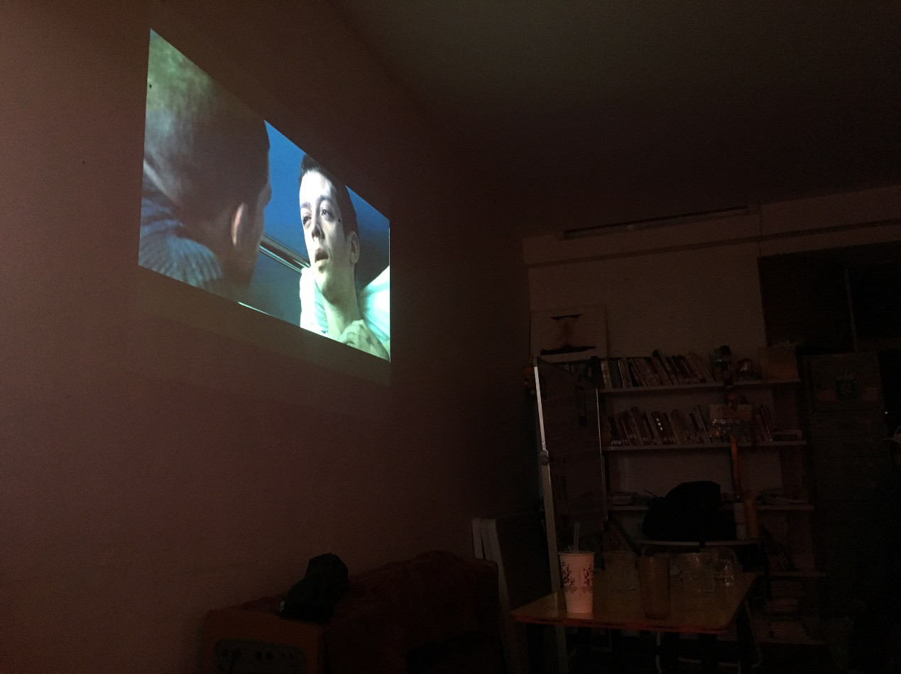
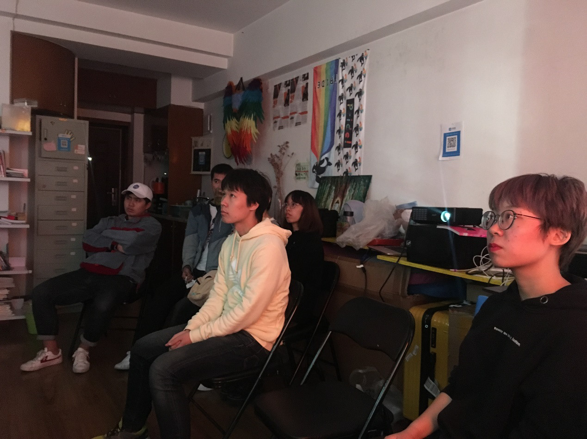

120 击观后 | 艾滋病是观看世界的一个透镜
文案：小狮子
排版：许旸
世界艾滋病日定于每年的 12 月 1 日，从 1988 年设立至今，旨在提高公众对人类免疫缺陷病毒引起的艾滋病在全球传播的意识，并对死于该疾病的人表示哀悼。自世界艾滋病日设立以来，每年都会有一个明确的主题，2018 年的主题是 Know your status。
为了纪念世界艾滋病日，酷儿论坛邀请广大性少数群体来一起愉快的玩耍精心挑选了《每分钟 120 击》这部影片，组织了一次愉快的观影交流会。
《每分钟 120 击》是一部晦涩难懂很有深度的片子，讲述了九十年代初期，彼时艾滋病肆虐，法国一个名为“ACT-UP”的民间公益组织走到了公众的视线之前，其中汇聚的同性恋群体、身患艾滋病等待着医疗救助的病人们以及支持他们的亲人们。组织希望能够通过激进的社会活动来激起民众和政府医药部门的关注。
开场第一幕展现了 ACT-UP 和 AFLS（法国抗艾研会）的对抗，官方的不作为，让艾滋病群体处于无休止的绝望等待中，此外，ACT-UP 还要和隐瞒实验结果，饥饿营销以哄抬药价的制药公司作斗争。

为了和制药公司谈判，ACT-UP 的成员需要自学相关的医学知识，以避免制药公司的推诿。

他们有定期的集会，会进行严肃的讨论并通过各项决议。与此同时，由于理念不同，组织内部也存在和很多不同的意见和利益诉求，就如何作斗争、要不要激进化、如何引发关注度等问题，他们可以吵得面红耳赤，但你能感受到每个人最渴望的那句话——我要活下去。

影片的高潮，是他们走上街头进行同志游行的时候，脸上绽放的热切的笑容和带给人无法言表的生命的活力与震撼。

观影结束之后，小伙伴们就影片描述的内容和自己的感受进行了热烈的讨论。一位小伙伴表示最让她印象深刻的是影片每一帧展现的主人公 Sean 的对生命热爱，特别是同志游行的时候洋溢在脸上的欢笑和活力四射的舞蹈，与片尾他悲惨的死去之间强烈的反差，带给她深切的惋惜，和对生命逝去的愤怒。在 Sean 的追悼会上，ACT-UP 的成员陆续走进 Sean 的家里，又让人感受到希望，逝者已矣，幸存的人终将继续前行，直至完成他们的使命。正是因为这群人当初的不懈努力，才有了今天性少数群体在社会上的发声权。

另外一位小伙伴指出，ACT-UP 组织的成员很多元化，例如 gay 、lesbian 、同性恋群体的亲友团以及一些语言障碍者。如同另外一部电影——《平常心》，讲述了美国艾滋病刚被发现的情景，片中拉拉尽管不是艾滋病主要的受害群体，依然和 gay 站在统一战线上互相扶持，然而在中国，艾滋病为 gay 带来的政治机遇使 gay 群体的曝光度和接纳度的增加，却引起了 lesbian 社群的质疑，这引起了 ta 的一些思考。
也有小伙伴提出了疑问为什么影片要花大量的镜头对 ACT-UP 的内部组织会议，比如进行决策表决，社团内部的争论冲突等内容进行细致的描绘，有人指出这部影片的导演是当时 ACT-UP 的成员，ACT-UP 组织本身的特点是尊重平等和多元，不同人有或激进或保守的行事方式，同时这么做也是为了告诉大家即使是性少数群体，内部也有很多不同的声音，这样能让其他人更全面地了解这个群体。
有人不理解制药公司作为一个商业公司，盈利无可厚非，为什么 ACT-UP 对他如此愤怒。有小伙伴指出大家愤怒一方面是制药公司坚持要到下一届世界艾滋病大会的时候才公布结果，另一方面是当研发出了新的有效药，制药公司还搞饥饿营销想谋取更多利益，这让他想起了《达拉斯买家俱乐部》，也许当时的人们并没有我们想象的能有效发声的渠道，逼不得已才用这么激进的方式引起公众的注意，对于一个将死之人，继续沉默等于死亡，因而做出这么激烈的举动似乎就能让人理解了。
还有小伙伴提出疑问，应该怎么看待社会发展之下少数人的牺牲，比如推进同性恋立法和研发艾滋病药物，这些工作是需要一定时间的，在这段时间里必然会有一部分人被忽视。有小伙伴用家暴法的例子回答了这一问题，正是因为以同语为首的一批 NGO 组织的不懈努力，才大大推进了立法进程，说明我们也能做一些努力来促进社会的发展。

观影会到这里就结束了，希望这部电影能带给大家一些思考，也希望大家能记住这个日子，12 月 1 日，有很多人因为艾滋病死去，有更多的人在为艾滋病患者的健康，为性少数群体的利益而抗争到底。
有的小伙伴因为太忙错过了此次观影会，没有关系，赶紧关注“酷儿论坛”公众号，我们将不定期发布观影会、桌游和其他相关的活动信息，欢迎大家报名参加。